Les calques sont un des outils de base de Photoshop. Un outil très utile mais que certains débutants ont parfois du mal à appréhender. Dans ce cours, je vais aborder le sujet de A à Z afin que vous n'ayez plus aucune difficulté avec cette fonction du logiciel.
Définition de "calque": Un calque est un élément graphique se superposant à un autre, le tout formant une image.
Ce n'est pas compliqué, non ? :)
Un calque est donc une partie d'image qui va en compléter une autre afin de créer une image complète. Pour illustrer ceci, voici un schéma de l'action d'un calque :
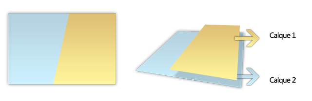
Dans notre image finale, nous voyons deux trapèzes. Si l'on décompose cette image, on peut voir qu'en réalité, il n'y a qu'un seul trapèze superposé à un rectangle bleu. Le trapèze jaune (calque 1) se situe donc au-dessus du calque 2 (le rectangle bleu). Il est impératif que vous compreniez le principe de ces calques : cela sert dans absolument toutes les images que vous serez amené à créer !
En terme de comparaison, dites-vous que ce principe est équivalent à l'ordre des éléments dans Power Point ou dans tout autre logiciel bureautique.
Le panneau calques est certainement un des plus important de Photoshop. Il permet de les organiser, de les modifier, d'ajouter des styles de calque...
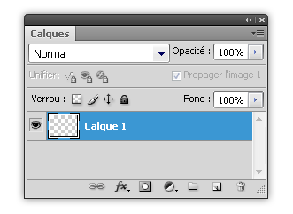
Le panneau calques
Nous allons en détailler le fonctionnement.
La zone centrale
Elle vous montre tous les calques de votre document. Le calque le plus haut de la liste est le premier à apparaître sur votre image. Dans mon exemple ci-dessous, le calque numéro 2 est au-dessus du calque rempli d'orange. Sur mon image finale, le calque orange sera donc en partie masqué par le bleu.
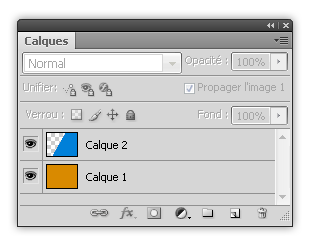
Les icônes
Elles servent à :
: Ajouter un nouveau calque au-dessus du précédant.
: Supprimer la calque sélectionné (mais vous pouvez le faire en appuyant sur Delete/Suppr.
: Créer un groupe de calques (que vous pouvez supprimer en cliquant sur l'icône
)
: Ajouter un calque de réglage (voir partie 4)
: Ajouter un style de calque (voir partie 5)
: Ajouter un masque de fusion (voir partie 3 / Lire ce cours)
: Lier deux calques (on ne peut plus les déplacer indépendamment)
La liste
Elle vous permet de définir le mode de fusion du calque.
La boîte
Elle permet de choisir l'opacité du calque. Si vous cliquez sur la petite flèche à gauche de la partie centrale de la boîte, cette réglette s'ouvre:
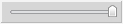
La zone "Verrou"
Ces 4 icônes servent à :
verrouiller les pixels transparents (vous ne pouvez plus les modifier)
verrouiller le calque afin que l'on ne puisse plus peindre dessus
verrouiller le calque afin que l'on ne puisse plus le déplacer
verrouiller le calque, on ne peux plus le modifier
Le calque "standard", il sert à afficher un élément graphique quelconque
Le calque de texte, c'est un calque contenant du texte modifiable à souhait
Le calque de réglage, il sert à effectuer différents réglages de retouche sur un calque standard
Le calque vectoriel, il contient une forme que vous pouvez modifier à l'aide de l'outil plume
Le masque de calques, sert à masquer une partie d'un calque, son action est réversible
L'objet dynamique, calque standard transformé pour accueillir un filtre à action réversible
Le calque de remplissage, comme son nom l'indique, il sert à remplir une forme ou une zone
Le calque standard
J'ai déjà abordé son fonctionnement dans la première partie du cours. Retenez simplement que c'est un élément graphique qui se superpose à un autre.
Le calque de texte
Je ne vais pas vous étonner si je vous dit qu'un calque de texte contient... du texte ! :p Un tel calque est créé lorsque vous sélectionnez l'outil texte horizontal ou vertical. Voici la manière dont il se présente dans le panneau calques:
Pour modifier un tel calque, il vous suffit de sélectionner l'outil texte et de cliquer sur le calque dans la zone de modification. Vous pourrez alors utiliser Photoshop comme un éditeur de texte "classique".
Le calque de réglage
Un calque de réglage sert à régler des paramètres de l'image. Je détaille son fonctionnement dans le point suivant.
Le calque vectoriel
Il est utilisé lorsque vous dessinez avec l'outil Plume ou que vous insérez une forme. Voici son apparence dans Photoshop:
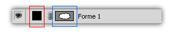
Détaillons-en le fonctionnement :
Le cadre rouge indique la couleur de remplissage de la forme
Le cadre bleu indique la forme par rapport à l'entièreté du document.
Le masque de calques
Ce n'est pas vraiment un calque. En réalité, le masque sert à cacher des pixels d'un calque standard. Pour en ajouter un, rendez-vous dans le menu Calques > Masque de fusion > Tout faire apparaître. Si vous avez Photoshop CS4, ouvrez le panneau "Masques" et cliquez sur cette icône:
.
Une fois le masque ajouté, voici ce à quoi ressemble votre calque de départ :
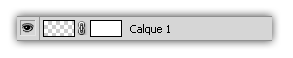
Vous pouvez peindre sur la zone blanche avec les outils classiques. Sachez simplement que peindre en noir va masquer des pixels, peindre en blanc les faire réapparaitre.
L'objet dynamique
Un objet dynamique est un calque standard, vectoriel ou de texte que l'on a convertit. L'avantage de ce type de calque est qu'il supporte les filtres classiques tout en leur appliquant une action réversible. Exemple : J'applique un flou gaussien de 3 pixels sur un calque standard. Une fois que j'ai validé la boîte d'options, mon calque est définitivement modifié. Avec un calque dynamique, je peux reparamétrer mon filtre (pour lui appliquer, par exemple, un flou de deux pixels). Un autre avantage d'un filtre dynamique est qu'il comporte automatiquement un masque de pixels, très utile pour affecter l'effet à une partie de l'objet.
Convertir un calque en objet dynamique
Rien de plus simple ! Il suffit d'effectuer un clic droit sur le calque à convertir et de sélectionner "Convertir en objet dynamique".
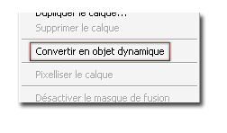
Modifier un objet dynamique
Une fois convertit, un objet dynamique se reconnait grâce à cette vignette:
.
Pour ajouter un filtre dynamique à un tel calque, rendez-vous dans le menu
et sélectionnez le filtre de votre choix. Une fois appliqué, l'objet dynamique prend cette forme:
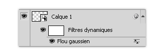
Pour le modifier, double-cliquez sur le nom du filtre.
Le calque de remplissage
Son nom indique mangnifiquement bien à quoi il sert ! Il existe trois sous-types de calques de remplissage :
Définition du calque de réglage : Un calque de réglage est un calque s'appliquant à un autre calque ou au document entier servant à effectuer des corrections de base réversibles sur l'image.
Comment ça vous n'avez rien compris ? :colere2:
En réalité, ce n'est pas si difficile que ça. Un calque de réglage sert comme je l'ai dit dans ma définition à régler certains paramètres de l'image. Il existe différents types de calques de réglage : chacun correspond à la modification qu'il effectue.
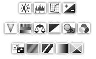
Les différents calques de réglage.
La structure d'un calque de réglage
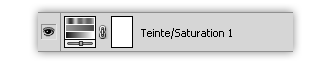
Le pictogramme représente le type de calque (ici Teinte/Saturation), le carré blanc est un masque de fusion classique. Un calque de réglage comme celui-ci s'applique à tout le document. Si vous voulez qu'il ne soit appliqué qu'au calque précédant, il vous faudra l'écrêter. Pour ce faire, cliquez-droit et sélectionnez "Créer un masque d'écrêtage".
Insérer un calque de réglage
Rien de plus simple ! Toutefois, la procédure change en fonction des versions du logiciel.
Avec Photoshop CS 1,2,3
Rendez-vous dans le menu
puis dans "Nouveau calque de réglage > (type de calque)" Vous pouvez également cliquer sur l'icône
située en bas du panneau calques.
Avec Photoshop CS4
Dans la version CS4, Adobe nous a facilité la tâche. Un nouveau panneau "Réglages" à fait son apparition dans le logiciel. Si celui-ci n'est pas activé par défaut, rendez-vous dans Fenêtre > Réglages. Le panneau se présente comme suit:
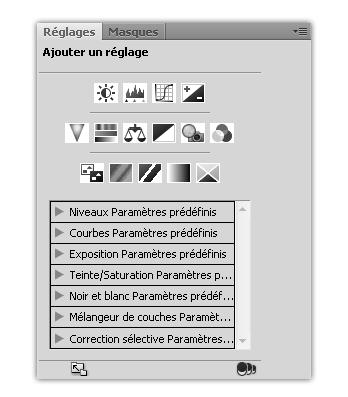
Le panneau "Réglages" de CS4 Sur le dessus, vous trouverez les différents types de calques de réglages. La liste présente en dessous vous propose des paramètres prédéfinis. Pour ajouter un calque de réglage avec ce panneau, il vous suffit de cliquer sur son icône.
Modifier un calque de réglage
Une fois de plus, la procédure diffère un peu en fonction de votre logiciel :
Avec Photoshop CS 1,2,3
Le calque de réglage se paramètre dans une fenêtre. Pour l'ouvrir, vous devez double-cliquer sur le calque à modifier.
Avec Photoshop CS4
Lorsque vous cliquez sur le calque de réglage, le panneau réglages change d'apparence en fonction du type de calque.
Un style de calque sert à donner une apparence graphique à un élément en lui rajoutant (par exemple) une ombre, un contour, un biseau... Ce sont des techniques employées très souvent lors de la création de compositions ou lors de la mise en forme d'un texte.
Un texte avant et après l'application de styles de calque. C'est mieux, non ? :)
La présentation d'un calque "stylisé"
On reconnait un calque sur lequel on a appliqué un style grâce à l'icône "fx" située à sa droite.
Lorsque l'on clique sur la petite flèche pointée vers le bas, le calque se développe comme suit:
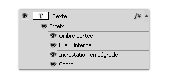
Vous voyez alors les différents effets qui lui ont été appliqués et vous pouvez les masquer à l'aide de l'oeil.
Ouvrir la fenêtre des styles de calques
Pour ouvrir cette fenêtre, double-cliquez sur le calque que vous voulez modifier ou cliquez sur l'icône
du panneau calques.
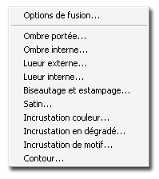
Modifier un style de calque
Une fois ouverte, voici ce à quoi ressemble la fenêtre des styles de calque :
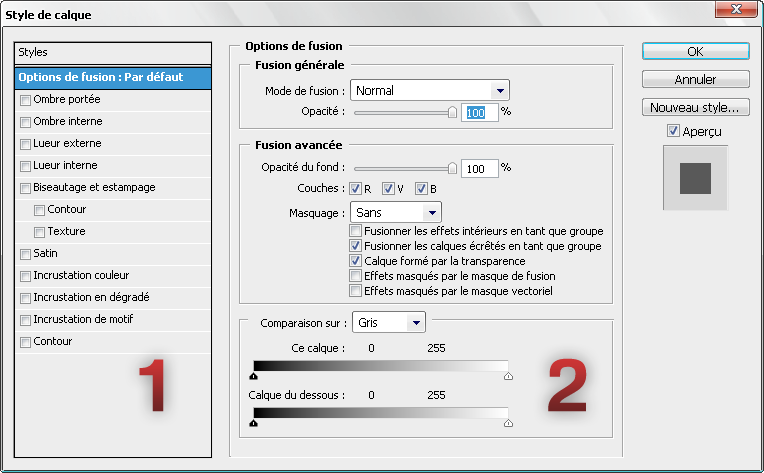
La zone n°1 sert à sélectionner les différents styles que vous voulez appliquer
La zone n°2 sert à paramétrer le style que vous avez choisi avec la zone 1
Lorsque l'on travaille sur un document présentant de multiples calques, on risque de vite s'emmêler les pinceaux. Heureusement, les développeurs de chez Adobe ont pensé à tout! Dans cette annexe, je vais aborder deux techniques pour vous retrouver dans vos documents.
Organiser ses calques dans des groupes
J'ai déjà abordé très sommairement la notion de groupes dans la partie 2 de ce cours. Dans cette sous-partie, je vais en détailler le fonctionnement.
Créer un groupe
Vous pouvez créer un groupe en cliquant sur l'icône
du panneau calques. C'est un moyen qui n'est pas très rapide. Sachez donc que vous serez souvent amené à créer des groupes par la combinaison de touches CTRL/CMD + G.
Modifier un groupe
Des calques placés dans un groupe se comportent exactement comme s'ils n'y étaient pas. Toutefois, vous ne pouvez déplacer individuellement des calques groupés qu'avec l'outil de transformation (CTRL+T) ou avec les touches fléchées.
Supprimer un groupe
Pour supprimer un groupe, cliquez sur l'icône
. Lorsque vous appliquez cette procédure avec un calque seul, celui-ci se supprime directement. Avec un groupe, ce n'est pas le cas : une fenêtre apparaît et vous demande ce que vous voulez faire.
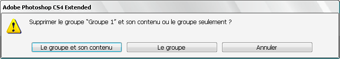
Attribuer une couleur à un calque
Une fonction intéressante dans l'organisation des calques est la possibilité de leur attribuer une couleur. Voici un schéma représentant mon calque avant et après l'ajout de couleur.
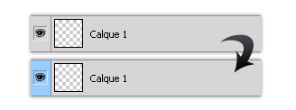
Certes, dans un document avec trois calques, ce n'est pas utile mais lorsque l'on travaille sur (par exemple) un webdesign, c'est une fonction très pratique.
Sélectionner et appliquer la couleur
Il existe deux moyens d'appliquer une couleur :
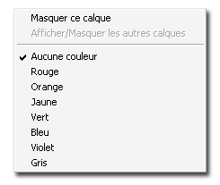
En cliquant droit sur la zone comportant l'icône
et en sélectionnant une option du menu qui s'affiche.
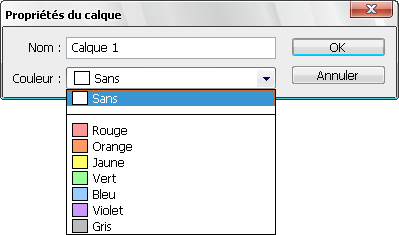
Via les propriétés du calque (accessibles depuis le menu
> Propriétés du calque):
Pour terminer cette annexe, voici un conseil que je vous invite à respecter :
Donnez toujours un nom clair à vos calques ! Vous pouvez créer tous les groupes que vous voulez, nommer un calque d'une façon compréhensible est la base d'un document lisible.
Et voilà ! C'est déjà tout. Si vous avez des questions/commentaires/remarques, n'hésitez pas à répondre ou à m'envoyer un MP.
Pour conclure par un beau dicton:
"Après l'effort, la récompense"
Et comme récompense, voici une petite capture d'écran de Flash CS4. Les traducteurs de chez Adobe méritent une claque, non ? ;)